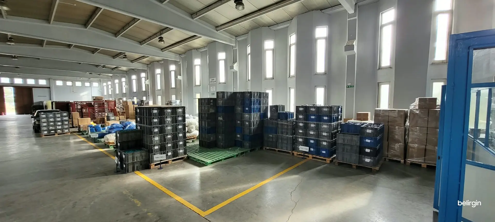
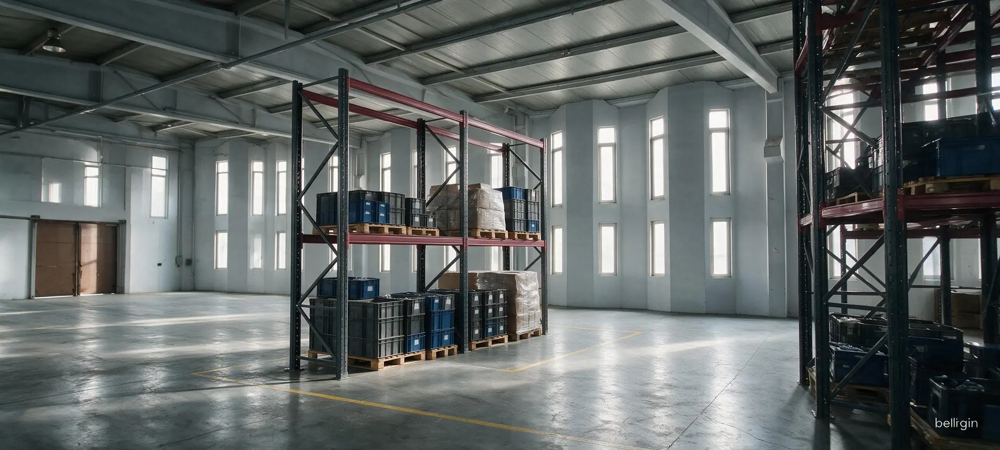
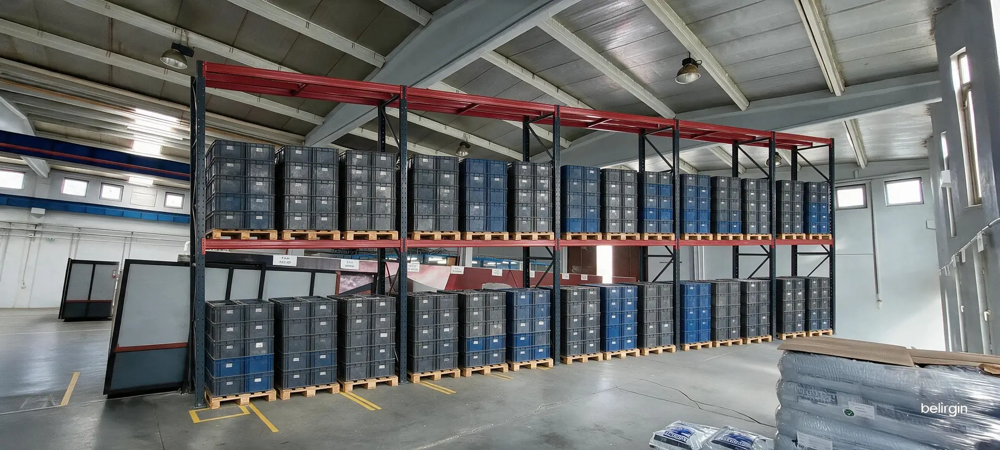
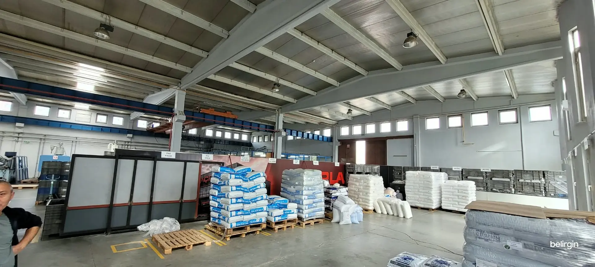
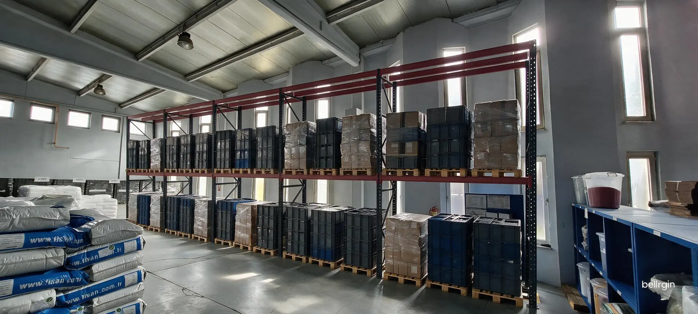
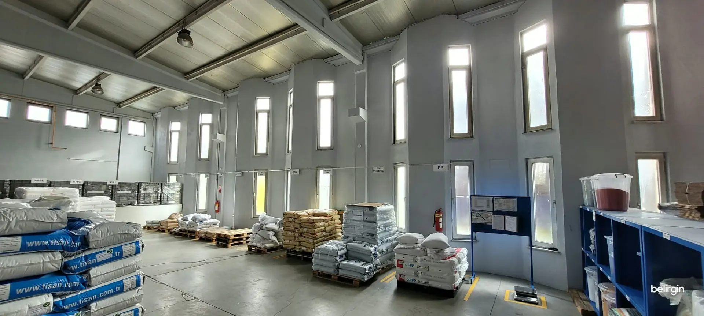

01
Raf grupları
Dikmeler antrasit (RAL 7016), kirişler kırmızı (RAL 3000). Tüm ölçüler milimetre.
| Grup | Uzunluk | Yükseklik | Derinlik | Göz | Kiriş seviyesi | Konum |
|---|---|---|---|---|---|---|
| 1. grup | 16 000 | 6 500 | 2 × 1 050, sırt sırta | 48 (6 × 4 × 2 sıra) | 4 | Ana koridor, ön |
| 2. grup | 14 200 | 6 500 | 1 050 | 20 (5 × 4) | 4 | Ana koridor, duvar boyu |
| 3. grup | 6 000 | 4 500 | 1 050 | 4 (2 × 2) | 2 | Ana koridor, arka |
| 4. grup uzun | 14 000 | 4 500 | 1 050 | 10 (5 × 2) | 2 | Pencereli duvar |
| 4. grup kısa | 13 500 | 4 500 | 1 050 | 10 (5 × 2) | 2 | Makine hattı önü |
02
Ana koridor
1. grup sarı zemin çizgisi boyunca, 2. grup sağ duvar boyunca.

MevcutKurulum sonrasıKarşılaştırmak için görselin üzerinde sağa sola kaydırın.
05
Ana koridor, arka bölüm
3. grup. Bu alan mevcut fotoğraf açılarında 1. grubun arkasında kaldığı için farklı bir açıdan, temsili olarak gösterilmiştir.

03
Makine hattı önü
4. grup kısa sıra, makine hattına paralel.


MevcutKurulum sonrası04
Pencereli duvar
4. grup uzun sıra, sırtı duvara dayalı.


MevcutKurulum sonrası11
Renk ve uygulama
Antrasit gri · RAL 7016Dikmeler, yan çerçeveler, çaprazlar
Alev kırmızısı · RAL 3000Yük kirişleri
Uygulama öncesi: 6 500 mm yüksekliğindeki 1. ve 2. grup için salonun kiriş altı ve saçak yüksekliği yerinde ölçülmelidir. Fotoğraflardan yapılan tahminde yan duvar dibindeki yükseklik yaklaşık 5 500 mm görünmektedir.
Görseller sunum amaçlıdır. Göz genişlikleri, uzunluk, yükseklik ve derinlik proje çizimlerinden alınmıştır; kiriş aralıkları çizim ölçeğinden okunmuştur (±30 mm). Ekranda görülen renk tonları nihai RAL kartelasından teyit edilmelidir.